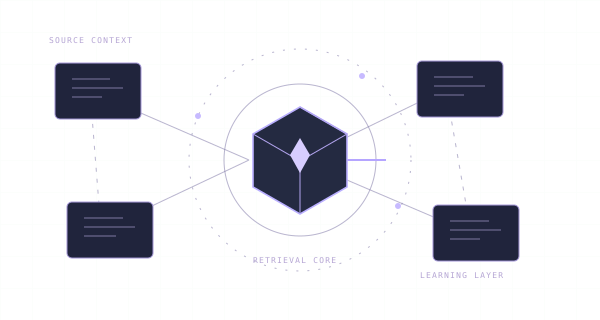
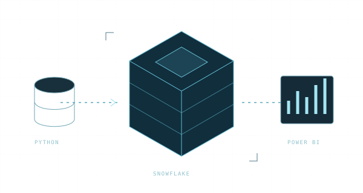
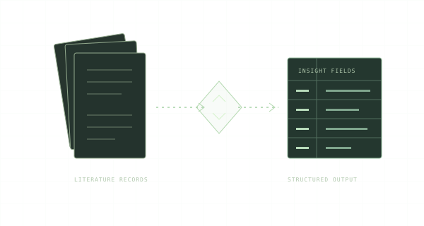

UPLOAD → OPTIMIZE → EXPORTFULL-STACK / OPTIMIZATION 01
Better routes.
Smarter operations.
A logistics planning system connecting validation, geocoding, route optimization, and driver-ready exports.
A PERSONAL EXPLORATION IN ENGINEERING
Hi, I’m Jason. I connect software, data, and AI to turn complex problems into thoughtful, working systems.
Full-stack development ✦ Data engineering ✦ Applied AI ✦ Cloud workflows
A selection of projects connecting real workflows with software, structured data, and machine intelligence.

UPLOAD → OPTIMIZE → EXPORTFULL-STACK / OPTIMIZATION 01
A logistics planning system connecting validation, geocoding, route optimization, and driver-ready exports.

CONTEXT → RETRIEVAL → LEARNINGFULL-STACK / GENERATIVE AI 02
An AI-assisted onboarding platform with retrieval-augmented chat, streaming responses, quizzes, and learning progress.

MODEL → INGEST → VISUALIZEDATA ENGINEERING / ANALYTICS 03
An end-to-end warehouse and BI workflow, from synthetic data generation and dimensional modeling to interactive reporting.

INGEST → EXTRACT → RECOVERAPPLIED AI / RESEARCH AUTOMATION 04
A recoverable literature-review pipeline that resolves DOIs, extracts structured insights with an LLM, and exports analysis-ready data.
SOFTWARE MEETS POSSIBILITY.
I’m Jason Lim. My projects explore what happens when useful software, well-structured data, and applied AI come together.
I’m drawn to the whole system: how a person interacts with it, how information moves through it, and how each piece contributes to a working result.
That exploration takes different forms—from optimizing delivery routes and building learning tools to shaping data pipelines and automating research workflows.
Follow the work on GitHubReact · TypeScript · FastAPI
Node.js · Express · REST & SSE
Python · SQL · PostgreSQL
Snowflake · Power BI · Pipelines
Retrieval-augmented generation
Machine learning · Optimization
03 / START A CONVERSATION
Interested in the work, a shared idea, or a technical conversation?
Find me where the projects live.